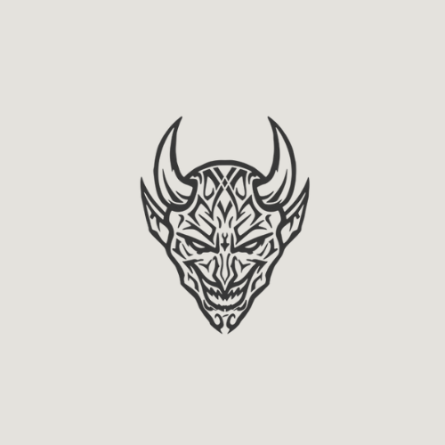

Portafolio - Projectos

ICT Website
Projecto de sitio web utilizando bootstrap y php minimante para la comodidad de el proximo desarrollador
Ver En github

Yuuruii Suite
Portafolio Web, YTS, YWD, YSD Utilizando bootsrap para su responsividad y js para funciones.
Ver En github
Phantom DBM
Projecto de gestor de base de datos web con PY, HTML, JS, CSS, Boostrap, ETC para feria tecnologica de ICT
Ver En github